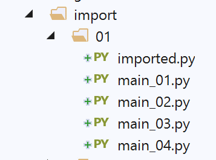
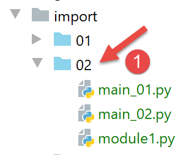
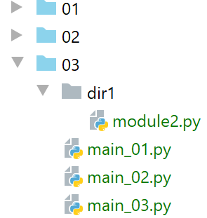

9. Imports
The error encountered in version 1 of the application exercise leads us to explore the role of the [import] statement in greater depth.

9.1. Scripts [import_01]
The [imported] script will be imported by various scripts (also called modules):

# imported module
# this statement will be executed every time the module is imported
print("2")
# variable belonging to the imported module
x=4
A module is executed when it is imported. So when the [imported] module is imported:
- the output of line 3 will occur;
- the variable x in line 5 will be assigned its value;
The [main_01] script is as follows:
# an imported module is executed
import imported
# use of the variable x from the imported module
print(imported.x)
- Line 2: The [imported] module is imported. This will cause it to be executed:
- the value 2 will be displayed;
- the variable x is created with the value 4;
- Line 4: The variable x from the imported module is used;
In PyCharm, an error is reported:
In [1], PyCharm indicates that it does not recognize the [imported] module. In technical terms, this means that the folder containing the [imported] module is not in PyCharm’s Python Path. The Python Path is the set of folders in which imported modules are searched for. To resolve this issue, simply set the folder containing the [imported] module as the [Root Sources] folder, in this case the [import/01] folder:


After this step, the [import/01] folder is added to PyCharm’s Python Path and the error disappears:

- in [1], the [01] folder has changed color;
- in [2-3], there is no longer an error;
The execution results are as follows:
Comments
- Line 2 is the result of executing the imported module;
- Line 3 displays the value of the variable x from the imported module;
The key takeaway from this example is the important concept that an imported module (or script) is executed.
The [main_02] script is as follows:
# Import the variable x from the imported module
from imported import x
# display it
print(x)
- Line 2 uses a different import syntax [from module import object1, object2, …]. Here, we import the variable [imported.x]. With this syntax, the variable x becomes a variable of the [main_02] script. We no longer need to prefix it with its module [imported];
- Line 4: We print the variable x from [main_02];
The results of the execution are as follows:
The [main_03] script is as follows:
# import everything visible from the imported module
from imported import *
# use the variable x from the imported module
print(x)
The [import *] notation on line 2 means that we import all visible objects from the imported module (variables, functions).
The results are as follows:
The [main_04] script is as follows:
# import the variable x from the imported module
# and rename it to y
from imported import x as y
# display the variable y
print(y)
Line 3 shows that we can import an object from the imported module and give it an alias. Here, the variable [imported.x] becomes the variable [main_04.y]. The results are the same as before.
9.2. Script [import_02]

The imported module [module1.py] is as follows:
# a function
def f1():
print("f1")
The imported module defines a function, which is a common scenario.
The script [main_01] is as follows:
# import
import module1
# execute f1
module1.f1()
- Line 2: the module is imported. It will be executed. Here, it does not display anything;
- line 4: the [f1] function from the imported module is executed;
The results of the execution are as follows:
Note: To prevent PyCharm from reporting an error on the import in line 2, you must place the folder containing [module1] in PyCharm's [Root Directories]:

In [1], the [02] folder placed in the [Root Sources] directory turns blue. Note that the reported error does not prevent the scripts from running correctly here. In fact, when the [main_0x] script is executed, the script’s folder is automatically added to the Python Path. As a result, [module1] is found. From now on, when a folder appears in blue on a screenshot, it means it has been placed in PyCharm’s [Root Sources].
The [main_02] script is as follows:
# import
from module1 import f1
# execute f1
f1()
- Line 2 imports the function [f1] from the module [module1];
- In line 4, the function f1 is used;
The results are identical to those of the [main_01] script.
9.3. Scripts [import_03]

Note: [03] is in the project’s [Root Sources].
The new scripts will import the [module2] module, which is not in the same folder as them.
The [module2] script is as follows:
# a function
def f2():
print("f2")
The script therefore defines a function [f2].
The [main_01] script is as follows:
# import the Class2 module
import dir1.module2
# execute f2
dir1.module2.f2()
- Line 2: We use a special notation to indicate how to find the [module2] module. [dir1.module2] should be read as the path [dir1/module2]: to find [module2], start from the current script’s folder [main_01], then go into [dir1], and there you’ll find [module2]. Keep in mind that the starting point of the path is the folder of the script that is importing;
- line 4: to execute the function [f2] from [module2];
The results are as follows:
Line 2, the result of the [f2] function.
The [main_02] script is as follows:
# Import the module dir1.module2, which we rename
import dir1.module2 as module2
# execute f2
module2.f2()
In line 2, we rename the module [dir1.module] to simplify the code in line 4.
The [main_03] script is as follows:
# Import the f2 function from the dir1.module2 module
from dir1.module2 import f2
# execute f2
f2()
This time, on line 2, we import only the [f2] function, which then becomes a function of the [main_03] script (line 4).
All these scripts work just as well in the PyCharm environment as they do in a Python console. The reason is that in both cases, the directory of the executed script—here, the [03] directory—is part of the Python Path. As a result, the [dir1/module2] directory is found.
9.4. Scripts [import_04]

Here, the [dir1] and [dir2] folders have been placed in the [Root Sources] of the PyCharm project.
The first module imported is [module3]:
# a function
def f3():
print("f3")
The second module imported is [module4]:
from module3 import f3
# a function
def f4():
f3()
print("f4")
- Line 1: We import the function [f3] from [module3]. Here, [module3] is visible because we placed its directory [dir1] in the [Root Sources];
- Lines 4–6: We define a function [f4] that calls the function [f3] from [module3];
The main script [main_01] is as follows:
# import module4
from module4 import f4
# execute f4
f4()
- Line 2: import the [module4] module. This is visible because we placed its directory [dir2] in PyCharm's [Root Sources];
- Line 4: executing the [f4] function from [module4];
The results of running [main_01] in PyCharm are as follows:
Now, let’s run [main_01] in a Python terminal (console):

The results are as follows:
What happened? The Python terminal has no knowledge of PyCharm’s Python Path or [Root Sources]. It has its own Python Path. In this path, there is always the folder of the script being executed, in this case the [main_01] script. It therefore knows the [import/04] folder. In the executed script, it finds the line:
from module4 import f4
The Python interpreter looks for [module4] in the folders of its Python Path. However, [module4] is not located in [import/04]—which is indeed in the Python Path—but in [import/04/dir2], which is not. Hence the error.
So we have a problem we’ve encountered before: a script that runs correctly in PyCharm may crash in a Python terminal. This is a recurring issue that we’ll need to resolve.
9.5. Scripts [import_05]

Note: the [dir1] and [dir2] folders are added to the Python Path. Note that there is already a conflict here: [module3] and [module4] will be found in two locations in PyCharm’s Python Path:
- in [import/04/dir1] and [import/05/dir1] for [module3];
- in [import/04/dir2] and [import/05/dir2] for [module4];
We can then remove [import/04/dir1] and [import/04/dir2] from the PyCharm project’s [Root Sources]. It turns out that here, [import/05/dir1] is a copy of [import/04/dir1] (the same goes for [dir2]), so there is no issue. However, it is worth noting that within PyCharm itself, you must pay attention to the list of folders in the [Root Sources] to avoid conflicts.
The [main_01] script becomes the following:
import sys
# we modify sys.path to include the folders
# containing the classes to be imported
sys.path.append(".")
sys.path.append("./dir1")
sys.path.append("./dir2")
# Import module4
from module4 import f4
# Run f4
f4()
We’re trying to solve the Python Path issue. We want one that works just as well in PyCharm as it does in a Python terminal. To do this, we’ll set it up ourselves.
- Lines 4–6: We add the directories [., ./dir1, ./dir2] to the Python Path. For this to work, the current directory at runtime must be the [import/05] directory. This will be true in PyCharm but not necessarily true in a Python terminal, as we will see;
- Line 8: We import [module4]. Based on what we just did, it should be found in [./dir2];
Execution in PyCharm yields the following results:
Now, in a Python terminal:
(venv) C:\Data\st-2020\dev\python\cours-2020\python3-flask-2020\import\05>python main_01.py
f3
f4
Line 1, the execution directory is [import/05].
Now let’s go up one level in the directory tree from [import/05]:
(venv) C:\Data\st-2020\dev\python\cours-2020\python3-flask-2020\import\05>cd ..
(venv) C:\Data\st-2020\dev\python\cours-2020\python3-flask-2020\import>python 05/main_01.py
Traceback (most recent call last):
File "05/main_01.py", line 8, in <module>
from module4 import f4
ModuleNotFoundError: No module named 'module4'
- Line 2: When [main_01] is executed, we are no longer in the [import/05] folder but in [import]. However, we wrote:
sys.path.append(".")
sys.path.append("./dir1")
sys.path.append("./dir2")
This adds the folders [import, import/dir1, import/dir2] to the Python Path, which is not what we want at all. Note that adding folders that do not exist (import/dir1, import/dir2) to the Python Path does not cause errors.
We’ve made progress, but it’s not enough. We need to add absolute paths to the Python Path, not relative ones.
The [main_02] script is a variant of [main_01] that uses a configuration file [config.json]:
{
"dependencies": [
"C:/Data/st-2020/dev/python/cours-2020/python3-flask-2020/import/05/dir1",
"C:/Data/st-2020/dev/python/cours-2020/python3-flask-2020/import/05/dir2"
]
}
The value of the [dependencies] key is the list of directories to add to the Python Path. Note that here we have used absolute paths rather than relative paths.
The [main_02] script uses the [config.json] file as follows:
import codecs
import json
import sys
# configuration file
config_filename="C:/Data/st-2020/dev/python/cours-2020/python3-flask-2020/import/05/config.json"
# read the JSON configuration file
with codecs.open(config_filename, "r", "utf-8") as file:
config = json.load(file)
# Modify sys.path
for directory in config['dependencies']:
sys.path.append(directory)
# import module4
from module4 import f4
# Run f4
f4()
- line 6: note that we used the absolute path to the configuration file;
- lines 8–9: the configuration file is read. A dictionary [config] (line 9) is constructed from its contents;
- lines 11-13: the elements of the array [config['dependencies']] are added to the Python Path. Note that since we used absolute folder names in [config.json], we are adding absolute names to the Python Path;
- line 16: [module4] is imported. It should be found since [dir2] is now in the Python Path;
Execution yields the same results as for [main_02], except that the script continues to run even when the execution directory is no longer [import/05]:
(venv) C:\Data\st-2020\dev\python\cours-2020\python3-flask-2020\import>python 05/main_02.py
f3
f4
Line 1, the execution directory is [import].
We’ve made progress. We’ve seen:
- that we had to build the Python Path ourselves;
- that we had to include the absolute paths of all the folders containing the modules imported by the application;
However, putting absolute paths in scripts is not a solution. As soon as the project is moved to another site, it no longer works. We need to find another way.
9.6. Scripts [import_06]

Note: the folders [06, dir1, dir2] have been placed in the [Root Sources] of the PyCharm project. The folders [dir1, dir2] are identical to those in the previous examples.
The [config.json] file is as follows:
{
"rootDir": "C:/Data/st-2020/dev/python/cours-2020/v-02/imports/06",
"relativeDependencies": [
"dir1",
"dir2"
],
"absoluteDependencies": [
]
}
We are introducing two types of paths:
- absolute paths, lines 7–8;
- relative paths, lines 3–6. These are relative to the root on line 2. Thus, when the project moves to a new location, only this line needs to be modified;
The [utils.py] script uses the [config.json] file and constructs the Python Path:
# imports
import codecs
import json
import os
import sys
# application configuration
def config_app(config_filename: str) -> dict:
# config_filename: name of the configuration file
# allow exceptions to be raised
# processing the configuration file
with codecs.open(config_filename, "r", "utf-8") as file:
config = json.load(file)
# Add dependencies to sys.path
rootDir = config['rootDir']
# Add the project's relative dependencies to sys.path
for directory in config['relativeDependencies']:
# add the dependency to the beginning of syspath
sys.path.insert(0, f"{rootDir}/{directory}")
# Add the project's absolute dependencies to the syspath
for directory in config['absoluteDependencies']:
# add the dependency to the beginning of the syspath
sys.path.insert(0, directory)
# return the configuration dictionary
return config
# directory of the executed script
def get_scriptdir():
return os.path.dirname(os.path.abspath(__file__))
- line 8: the [config_app] function receives the name of the configuration file as a parameter;
- lines 12–14: the configuration file is used to create the [config] dictionary;
- line 20: [sys.path] is the list of directories in the Python Path;
- lines 17–20: the relative dependencies from the configuration file are added to the Python Path. They are added to the beginning of the [sys.path] list, line 20. This is because when Python searches for a module, it explores the directories in [sys.path] in order. However, in this document, modules with the same names will be located in different directories within the [sys.path]. By placing the application’s dependencies at the beginning of the [sys.path] array, we ensure that these are searched before other directories in the [sys.path] that might contain modules with the same names;
- lines 21–24: the absolute dependencies of the configuration file are added to the Python Path;
- line 26: the application configuration is returned;
- lines 29–30: the [get_scriptdir] function returns the absolute path of the directory containing the currently running script (the one where the function call is located);
The main script [main] is as follows:
# imports
import sys
from utils import config_app
def display_path(msg: str):
# message
print(f"{msg}------------------------------")
# sys.path
for path in sys.path:
print(path)
# main -------------
try:
# sys.path is configured
display_path("before....")
config = config_app(f"{get_scriptdir()}/config.json")
display_path("after....")
# import module4
from module4 import f4
# execute f4
f4()
except BaseException as error:
print(f"The following error occurred: {error}")
finally:
print("done")
- line 4: the [config_app] function is imported. Note that since [utils] and [main] are in the same directory, this [import] always works. This is because the directory of the main script is automatically added to the Python Path;
- lines 7–12: the [display_path] function displays the list of folders in the Python Path;
- line 19: the application is configured. Note that the absolute path of the configuration file is passed to the [config_app] function. After this statement, the Python Path has been rebuilt;
- line 22: we import [module4]. Thanks to the reconstruction of the Python Path, this module will be found;
- line 24: the [f4] function is executed;
In the PyCharm environment, the execution results are as follows:
C:\Data\st-2020\dev\python\cours-2020\python3-flask-2020\venv\Scripts\python.exe C:/Data/st-2020/dev/python/cours-2020/python3-flask-2020/import/06/main.py
before....------------------------------
C:\Data\st-2020\dev\python\cours-2020\python3-flask-2020\import\06
C:\Data\st-2020\dev\python\cours-2020\python3-flask-2020
C:\Data\st-2020\dev\python\cours-2020\python3-flask-2020\functions\shared
C:\Data\st-2020\dev\python\courses-2020\python3-flask-2020\import\v01\shared
…
C:\Program Files\Python38\python38.zip
C:\Program Files\Python38\DLLs
C:\Program Files\Python38\lib
C:\Program Files\Python38
C:\Data\st-2020\dev\python\cours-2020\python3-flask-2020\venv
C:\Data\st-2020\dev\python\cours-2020\python3-flask-2020\venv\lib\site-packages
after....------------------------------
C:/Data/st-2020/dev/python/cours-2020/v-02/imports/06/dir2
C:/Data/st-2020/dev/python/cours-2020/v-02/imports/06/dir1
C:\Data\st-2020\dev\python\cours-2020\python3-flask-2020\import\06
C:\Data\st-2020\dev\python\courses-2020\python3-flask-2020
C:\Data\st-2020\dev\python\courses-2020\python3-flask-2020\functions\shared
C:\Data\st-2020\dev\python\courses-2020\python3-flask-2020\taxes\v01\shared
….
C:\Program Files\Python38\python38.zip
C:\Program Files\Python38\DLLs
C:\Program Files\Python38\lib
C:\Program Files\Python38
C:\Data\st-2020\dev\python\cours-2020\python3-flask-2020\venv
C:\Data\st-2020\dev\python\cours-2020\python3-flask-2020\venv\lib\site-packages
f3
f4
done
Process finished with exit code 0
Comments
- lines 2–13: PyCharm’s Python Path. It includes all the folders placed in the project’s [Root Sources];
- lines 14–29: the Python Path constructed by the [config_app] function. Lines 15–16 contain the two dependencies we added;
- lines 22–27: the system directories of the Python interpreter that executed the script;
- lines 28–29: execution proceeds normally;
Now, let’s return to the context that previously caused a runtime error:
- open a Python terminal;
- change to a directory other than the one containing the executed script;
(venv) C:\Data\st-2020\dev\python\cours-2020\python3-flask-2020\import>python 06/main.py
before....------------------------------
C:\Data\st-2020\dev\python\cours-2020\python3-flask-2020\import\06
C:\Program Files\Python38\python38.zip
C:\Program Files\Python38\DLLs
C:\Program Files\Python38\lib
C:\Program Files\Python38
C:\Data\st-2020\dev\python\cours-2020\python3-flask-2020\venv
C:\Data\st-2020\dev\python\cours-2020\python3-flask-2020\venv\lib\site-packages
after....------------------------------
C:/Data/st-2020/dev/python/cours-2020/v-02/imports/06/dir2
C:/Data/st-2020/dev/python/cours-2020/v-02/imports/06/dir1
C:\Data\st-2020\dev\python\cours-2020\python3-flask-2020\import\06
C:\Program Files\Python38\python38.zip
C:\Program Files\Python38\DLLs
C:\Program Files\Python38\lib
C:\Program Files\Python38
C:\Data\st-2020\dev\python\cours-2020\python3-flask-2020\venv
C:\Data\st-2020\dev\python\cours-2020\python3-flask-2020\venv\lib\site-packages
f3
f4
done
This time it works (lines 20–21). Note that [sys.path] does not contain the same directories as when running under PyCharm.
9.7. Scripts [import_07]
We improve the previous solution in two ways:
- we replace the configuration file [config.json] with a script [config.py]. Indeed, the JSON file poses a significant problem: it cannot be commented on. The [config.json] dictionary can be replaced by a Python dictionary, which has the advantage of being commentable;
- we use a module visible to all Python projects on the machine;
9.7.1. Installing a machine-wide module

Above, we create a folder [packages/myutils] in the PyCharm project (the names don’t matter).
The [myutils.py] script is as follows:
# imports
import sys
import os
def set_syspath(absolute_dependencies: list):
# absolute_dependencies: a list of absolute folder names
# add the project's absolute dependencies to the syspath
for directory in absolute_dependencies:
# check if the directory exists
exists = os.path.exists(directory) and os.path.isdir(directory)
if not exists:
# Raise an exception
raise BaseException(f"[set_syspath] The Python Path directory [{directory}] does not exist")
else:
# add the directory to the beginning of the syspath
sys.path.insert(0, directory)
- lines 6–18: the [set_syspath] function creates a Python Path with the list of directories passed to it as a parameter;
- lines 12–15: we check that the directory to be added to the Python Path exists;
The [__init.py__] script (two underscores before and after the name; this is required) is as follows:
from .myutils import set_syspath
We import the [set_syspath] function from the [myutils] script. The notation [.myutils] refers to the path [./myutils], meaning the [myutils] script is located in the same directory as [__init.py]. We could have used the notation [myutils]. However, we are going to create a machine-wide [myutils] module. As a result, the notation [from myutils import set_syspath] would become ambiguous. Does it refer to importing the [myutils] script from the current directory or the machine-wide [myutils] script? The notation [.myutils] resolves this ambiguity.
The [setup.py] script (here too, the name is fixed) is as follows:
from setuptools import setup
setup(name='myutils',
version='0.1',
description='Utility for setting the Python Path',
url='#',
author='st',
author_email='st@gmail.com',
license='MIT',
packages=['myutils'],
zip_safe=False)
In this script, we describe the module we are going to create. Here, we will create it locally. However, the same process is used to create an officially distributed module (see |pypi|). The important points here are as follows:
- line 3: the name of the module being created;
- line 4: the module’s version;
- line 5: its description;
- lines 7–8: the module’s author;
To install this module with machine-wide scope, proceed as follows:

Then, in the Python terminal, type the following command [pip install .]:
(venv) C:\Data\st-2020\dev\python\cours-2020\python3-flask-2020\packages>pip install .
Processing c:\data\st-2020\dev\python\cours-2020\python3-flask-2020\packages
Using legacy setup.py install for myutils, since package 'wheel' is not installed.
Installing collected packages: myutils
Attempting to uninstall: myutils
Found existing installation: myutils 0.1
Uninstalling myutils-0.1:
Successfully uninstalled myutils-0.1
Running setup.py install for myutils ... done
Successfully installed myutils-0.1
From now on, any script on the machine can import the [myutils] module without it being in the project code.
9.7.2. The [config.py] script

The [config.py] script handles the application's configuration:
def configure():
import os
# absolute path to the configuration script directory
script_dir = os.path.dirname(os.path.abspath(__file__))
# absolute paths of the directories to add to the syspath
absolute_dependencies = [
# local directories
f"{script_dir}/dir1",
f"{script_dir}/dir2",
]
# Update the syspath
from myutils import set_syspath
set_syspath(absolute_dependencies)
# return the configuration
return {}
- Line 1: The [configure] function handles the application configuration;
- lines 7–10: the dictionary that was previously in [config.json];
- lines 9-10: since we are in a script, we can directly access the absolute folder names [dir1, dir2];
- lines 12–14: we use the [set_syspath] function from the [myutils] module we just created to set the Python Path for the configuration;
- line 20: we return the application configuration dictionary. Here, it is empty;
9.7.3. The [main.py] script
The main script [main] is as follows:
# configure the application
import config
config = config.configure()
# The syspath is configured—we can now import modules
from module4 import f4
# main -------------
try:
f4()
except BaseException as error:
print(f"The following error occurred: {error}")
finally:
print("done")
- Lines 2–4: We configure the application using the [config.py] module. This is accessible because it is in the same directory as the main script. However, the main script’s directory is always part of the Python Path;
- by the time we reach line 6, the Python Path has been constructed to include the [module4] module’s folder. We can therefore import it on line 7;
- lines 10–15: all that remains is to execute the [f4] function;
The results of the execution in PyCharm are as follows:
In a Python terminal outside the main script's directory, the results are as follows:
From now on, we will always follow the same procedure to configure an application:
- the presence of a [config.py] script in the main script’s directory. This script contains a [configure] function that serves two purposes:
- to construct the Python Path for the application. To do this, [config.py] lists all the folders containing the modules used by the application and constructs the Python Path using their absolute paths;
- build the [config] dictionary for the application’s configuration;
We apply this approach to the second version of the practice exercise. As you may recall, version 1 worked in the PyCharm environment but not in a Python terminal. The problem stemmed from the Python path.